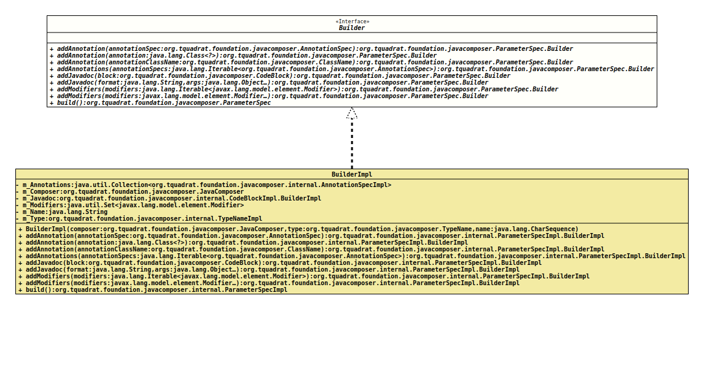

Interface ParameterSpec.Builder
- All Known Implementing Classes:
ParameterSpecImpl.BuilderImpl
- Enclosing interface:
ParameterSpec
@ClassVersion(sourceVersion="$Id: ParameterSpec.java 1068 2023-09-28 21:42:28Z tquadrat $")
@API(status=STABLE,
since="0.0.5")
public static interface ParameterSpec.Builder
The builder for an instance of
ParameterSpec- Author:
- Square,Inc.
- Modified by:
- Thomas Thrien (thomas.thrien@tquadrat.org)
- Version:
- $Id: ParameterSpec.java 1068 2023-09-28 21:42:28Z tquadrat $
- Since:
- 0.0.5
- UML Diagram
-

UML Diagram for "org.tquadrat.foundation.javacomposer.ParameterSpec.Builder"
{kind=link}
-
Method Summary
Modifier and TypeMethodDescriptionaddAnnotation(Class<?> annotation) Adds an annotation for the parameter.addAnnotation(AnnotationSpec annotationSpec) Adds an annotation for the parameter.addAnnotation(ClassName annotationClassName) Adds an annotation for the parameter.addAnnotations(Iterable<AnnotationSpec> annotationSpecs) Adds annotations for the parameter.addJavadoc(String format, Object... args) Adds text to the Javadoc for the parameter.addJavadoc(CodeBlock block) Adds text to the JavaDoc for the parameter.addModifiers(Iterable<Modifier> modifiers) Adds modifiers for the parameter.addModifiers(Modifier... modifiers) Adds modifiers for the parameter.build()Builds a newParameterSpecinstance from the added components.
-
Method Details
-
addAnnotation
Adds an annotation for the parameter.- Parameters:
annotationSpec- The annotation.- Returns:
- This
Builderinstance.
-
addAnnotation
Adds an annotation for the parameter.- Parameters:
annotation- The annotation.- Returns:
- This
Builderinstance.
-
addAnnotation
Adds an annotation for the parameter.- Parameters:
annotationClassName- The name of the annotation class.- Returns:
- This
Builderinstance.
-
addAnnotations
Adds annotations for the parameter.- Parameters:
annotationSpecs- The annotation.- Returns:
- This
Builderinstance.
-
addJavadoc
Adds text to the JavaDoc for the parameter.- Parameters:
block- The comment text.- Returns:
- This
Builderinstance.
-
addJavadoc
Adds text to the Javadoc for the parameter.- Parameters:
format- The format.args- The arguments.- Returns:
- This
Builderinstance.
-
addModifiers
Adds modifiers for the parameter.- Parameters:
modifiers- The modifiers.- Returns:
- This
Builderinstance.
-
addModifiers
Adds modifiers for the parameter.- Parameters:
modifiers- The modifiers.- Returns:
- This
Builderinstance.
-
build
Builds a newParameterSpecinstance from the added components.- Returns:
- The new
ParameterSpecinstance.
-